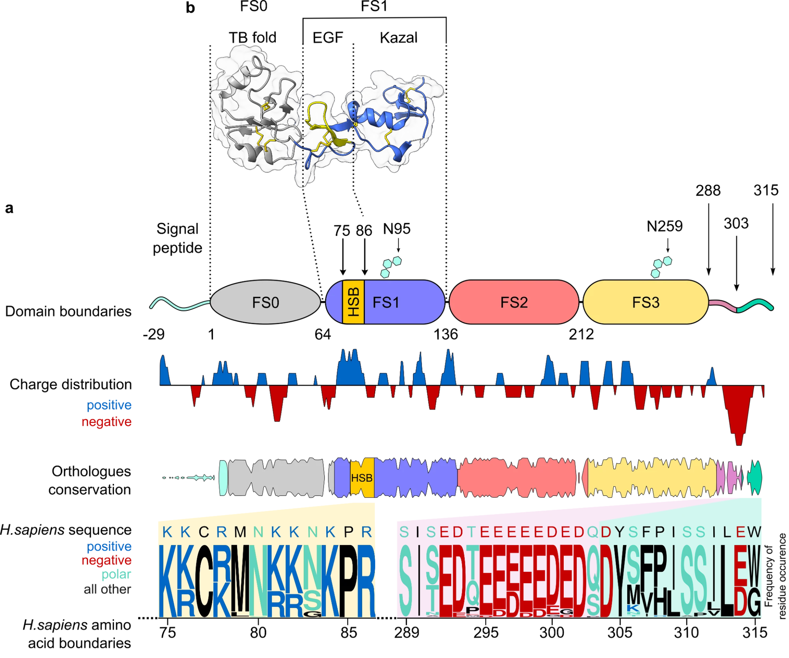
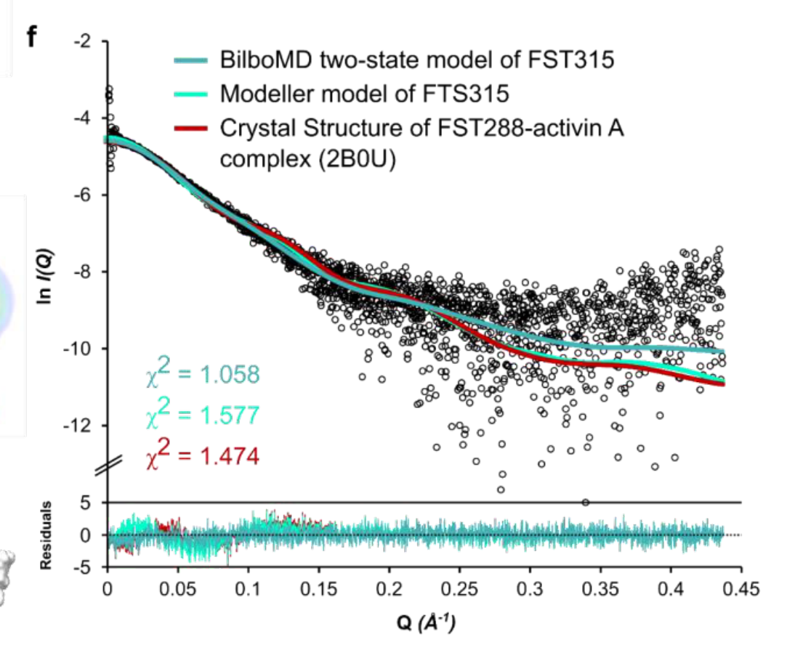
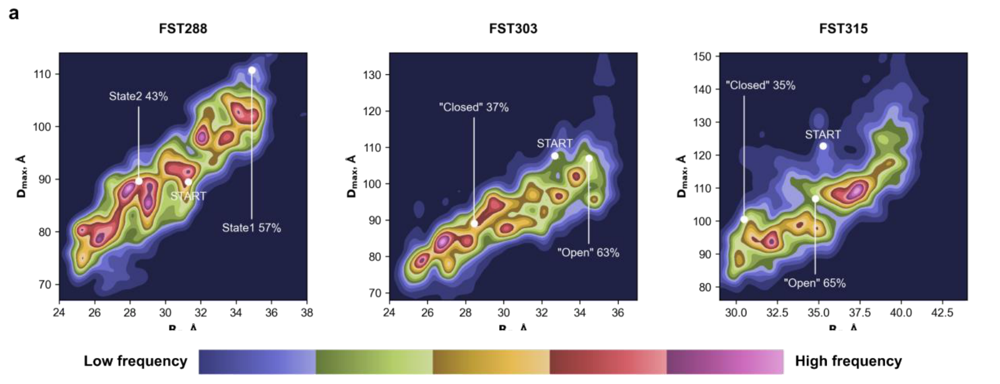
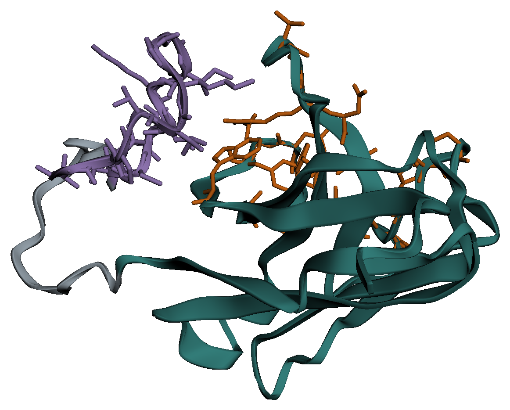
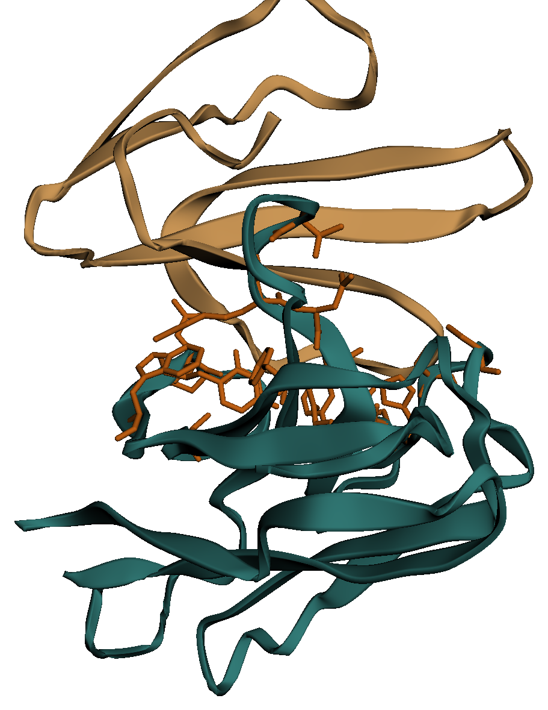
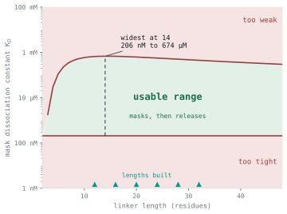
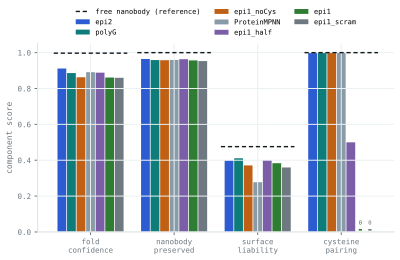

Computational design of protease-responsive nanobodies
A proposed pipeline for designing nanobodies that are masked in circulation and restored to antigen binding by proteolysis, together with a partial implementation on an experimental nanobody–antigen complex.
Previous research
During my PhD at the University of Cambridge I investigated how structural components of TGF-β superfamily receptors and their extracellular inhibitors contribute to biological function. I used SAXS-based structural modelling and biophysical assays to characterise the C-terminal tail of follistatin, showing that it interacts with the FS1 domain and alters heparan sulphate binding, and that SEC-SAXS data are best described by two distinct solution conformations. I also investigated the contribution of receptor transmembrane helices to assembly and signalling, for which I developed a bacterial signalling assay for transmembrane helix heterodimerisation.
The follistatin work is directly relevant here, since it concerns an intramolecular interaction that regulates access to a protein-binding surface, which is the arrangement the present design introduces deliberately.
Background in solution behaviour modelling of flexible multidomain signalling inhibitor





Research question and molecular architecture
The question concerned nanobodies against snake venom toxins that would remain inactive in circulation and become active at the site of a bite, where the local environment differs from plasma. Three environmental cues were proposed: acidic pH, raised protease activity and local hypoxia.
| environmental cue | consideration | decision |
|---|---|---|
| Acidic pH | Blood is pH 7.35–7.45; the brief gives roughly 6.0–6.5 at a bite site. The only side chain that changes state across that range is histidine, so a pH switch is a histidine switch. At a pKa of 6.0 it is 4.3% protonated in blood and 24.0% at pH 6.5 — a 5.6-fold change, but 76% of the residue is still neutral where it has to act. | Not selected |
| Protease activity | Proteolysis is irreversible, which makes activation a single committed event rather than an equilibrium, and venom metalloproteinases are themselves part of the pathology being treated. | Selected |
| Hypoxia | Would require an oxygen-sensitive molecular mechanism suitable for a small secreted protein. | Not selected |



Proposed computational pipeline
The three scores are not combined into a single value, since a high score on one objective would otherwise compensate for failure on another. Selection runs in three steps. Hard constraints remove constructs that cannot work at all, before any comparison, so that a failed requirement cannot be offset by a strong score elsewhere. Pareto optimisation then identifies the nondominated candidates among the rest, with no weights.
That leaves a set rather than an ordered list, and ordering it is a separate decision that has to be stated. The criterion used here is maximin: the scores are normalised to a common scale and each candidate is ranked by its lowest objective, so a design that is adequate on all three comes before one that is excellent on two and poor on the third. The ordered front is then deduplicated by mask, because predictions made for near-identical constructs carry the same systematic errors and a shortlist of variants tests one hypothesis repeatedly.
The discount term is in the implementation and set to zero. It would down-weight a candidate promoted by a single optimistic model, which is a real risk here, but no calibrated uncertainty exists for any of the three scores and supplying a number would make the ordering look better founded than it is.
Worked computational example
The pipeline was implemented and applied to Co-crystal of broadly neutralizing VHH in complex with short neurotoxin 1 (P01426) Naja pallida (9RIU), a 2.5 Å X-ray structure deposited in 2025.
It was chosen because it is a crystallographically characterised nanobody–toxin complex with a single binding site, which is what the geometry and the masking measurements need. The architecture and the methods are what transfer; a viper application would start from a viper toxin complex and redesign the mask for it.
What each module produced, in the order the modules ran. The numbers are those in the diagram above, and rows marked — are the assembly and structure-prediction steps that every module depends on. Three steps discard candidates and are marked; the rest transform what they are given.
| module | what happens | result | feeds |
|---|---|---|---|
| 01 | the deposited complex measured: paratope, termini and contact faces, then a tether model applied to the geometry | a 3.51-decade window on mask affinity | 02a and 02b |
| 02b | protease substrates generated against the target profile and scored for selectivity selects | 714 generated, 4 kept | the linker set |
| 02b | controls added, and the kept substrates rebuilt at each modelled linker length | 21 linkers | assembly |
| 02a | masks built from the 10 antigen residues within 3.5 Å of the nanobody: window and substitution variants, and matched controls | 12 masks | assembly |
| — | every mask paired with every linker, at every length, so no comparison rests on a combination that was not built | 12 × 21 = 252 pairs, plus the free nanobody = 253 | structure prediction |
| — | each construct folded once with ESMFold, as a single chain | 253 structures | 03, 04 and 05 |
| 02a | the mask rewritten by ProteinMPNN on 12 of those folded backbones, nanobody and linker held fixed | 96 designs | structure prediction |
| — | redesigns folded with ESMFold | 96 structures | 03, 04 and 05 |
| 03 | scored for fold retention, exposed surface and disulfides | 349 scored | 06 |
| 05 | scored for protease recognition and for reach in the fold | 348 scored | 06 |
| 04 | paratope surface occlusion measured against the free nanobody | 252 scored | 06 |
| 04 | each mask predicted against the bare nanobody, untethered, with the antigen as a positive control | 13 predictions | read alongside 06 |
| 06 | hard constraints, then the nondominated set, then ordered by weakest objective and deduplicated by mask selects | 348 scored, 0 ruled out, 40 nondominated, 6 shortlisted | 04 verification |
| 04 | the shortlist predicted as a whole assembly with its antigen selects | 6 predicted, 1 worth making | the reported candidates |
Every experiment the pipeline defines, under the module it belongs to — the question it asks, the method that produced its number, and what came out
| Reference interface01_reference_structure.py | Which residues does the antigen bury, and how far is each terminus from them? | Shrake–Rupley SASA, biotite 1.6 | run 19 paratope residues; N-terminus 21.2 Å from the paratope centroid against 34.2 Å for the C-terminus |
| Tether model02_tether_model.py | What mask affinity can masking and release both tolerate? | worm-like chain; competitive equilibria | run 3.51 decades at 14 residues; the window closes above 11 nM antigen affinity |
| Mask design03a_mask_design.py | What does the antigen present at the paratope? | antigen contact face at 3.5 Å; window variants | run contact face C42–C53, 9 residues within 3.5 Å, burying 581 Ų; 12 candidates, 0 cysteines orphaned by the cut |
| Construct assembly03_construct_library.py | How many constructs does the design space give? | the design matrix: one variable at a time | run 253 constructs from 12 masks and 21 linkers |
| ProteinMPNN redesign07_redesign_masks.py | Can the mask sequence be improved on the same backbone? | ProteinMPNN v_48_020, nanobody and linker fixed | run 96 unique masks from 12 parents |
| Linker generation02b_linkers.py | Can a linker be cut at the site and resist elsewhere? | CleaveNet conditional generator + predictor | run 714 substrates generated, 4 kept at selectivity +1.71 against +0.31 for a Gly/Ser control |
| Cleavability against measurement18_cleavage_evidence.py | Do the substrates hold up against the measured library, not the model? | position weight matrix and nearest neighbour over the Kukreja library | run position weight matrix +0.39 out of sample; agrees with CleaveNet at r = +0.87 across the linkers |
| Linker length sweep16_linker_length_sweep.py | Does the mask reach the paratope, and at what length? | flank-length sweep, substrate held constant; ESMFold | run at 12 residues the mask is 26 Å away and makes no contact; contact appears at 24 over 36 constructs with the substrate held constant |
| Fold the constructs04_fold_constructs.py | Does the nanobody fold survive the fusion? | ESMFold facebook/esmfold_v1 | run 253 folded; free nanobody pLDDT 90, paratope SASA 1316 Ų |
| Structural feasibility12_feasibility.py | Can the construct be expressed and folded? | pLDDT; Cα core RMSD; SASA; SG–SG distance | run mean score 0.31; cysteine pairing measured from the model rather than counted |
| Independent complexes15_interface_controls.py | Does this interface look like other nanobody–toxin pairs? | the same measures on independent complexes | run 4 complexes compared |
| Mask binding, untethered17_mask_binding.py | Does the mask find the paratope with no linker holding it there? | Boltz-2.2.1, mask + nanobody, no tether | run positive control (antigen) 77% on the paratope; the grafts place 90% of their contacts there against 64% for poly-glycine and 60% for a scramble |
| The alignment control09_complex_prediction.py | Can the method reproduce an interface that is already known? | Boltz-2.2.1 with every chain unaligned: a positive control, on a complex the crystal structure already answers | run predicted with no alignments at all, the free nanobody and its own antigen put only 7% of contacts on the paratope the crystal structure shows: a positive control the method failed, before any mask was involved |
| Verify the front19_verify_front.py | With the mask on, can the antigen still bind? | Boltz-2.2.1, whole construct with antigen, alignments on public chains | run 1 of 6 verified constructs block the antigen against a free-nanobody control at 81% |
| Cleavability in context10_trigger_accessibility.py | Can a protease reach the linker in the folded construct? | extension × exposure × 17 Å clearance | run context score 0.01 to 0.43; independent of sequence recognition |
| Multiobjective ranking13_rank.py | Which constructs does nothing else beat? | Pareto non-domination | run 40 of 348 nondominated, ordered by weakest objective |
| Conformational ensemble | Does one construct sample a masked and an unmasked state? | BioEmu-1 | proposed BioEmu-1, one construct at a time. Stage 14 superimposes different designs on one backbone, which is a comparison across designs and not an ensemble for a sequence. |
| Venom protease specificity | Is the linker cut by a snake venom metalloproteinase? | no model exists | proposed No substrate dataset exists for SVMPs. The host gelatinases stand in and the page says so. |
| Wet-lab measurement | Does any of this hold outside a predictor? | BLI or SPR; cleavage time-course | proposed Expression, affinity by BLI or SPR, and a cleavage time-course would test one scoring function each. |
Module 01Structural and affinity constraints
Reference structure. I used the experimental VHH–toxin complex (PDB 9RIU) to locate the paratope and the possible linker attachment sites; which antigen residues face it, and what the masks are grafted from, is Module 02. The paratope contains 19 residues, and neither terminus is part of it, so either could in principle carry a mask. Which one does is decided by the distances below.


Estimating linker length and mask affinity. I used established models from polymer physics and binding equilibrium to estimate which linker lengths and mask affinities could allow both masking and release.
1 · Effective concentration of the tethered mask. I used the experimental structure to identify where to attach the linker. The N-terminus is closer to the paratope than the C-terminus, 21.2 Å against 34.2 Å to its centre, so I selected N-terminal attachment.
The Gly/Ser linker is flexible and can adopt many conformations. I modelled it as a worm-like chain, a standard model for flexible protein linkers. This estimates how likely a linker of a given length is to position the mask near the paratope.
For each linker length I calculated the mask's effective local concentration, Ceff, using the distance of 21.2 Å measured from the structure. The model assumes 3.8 Å per residue when fully extended and a persistence length of 4.5 Å to describe flexibility. The resulting Ceff is what sets how strongly the mask needs to bind while tethered.
Ceff(d) = 1660.54 · (3 / 2π⟨r²⟩)3/2 · e−3d²/2⟨r²⟩
2 · Masking before cleavage, the upper curve. The fraction of construct whose paratope is occupied by its own tethered mask is
Pmasked ≥ 95% requires KD,mask ≤ Ceff / 19
Requiring at least 95% masking therefore caps the mask KD at a nineteenth of Ceff, which is the upper curved boundary in the figure. A short linker cannot reach the paratope, and a long one spreads the mask through a larger volume, so Ceff — and with it the loosest mask that still works — rises to a maximum and falls again.
3 · Antigen binding after cleavage, the lower line. Once the linker is cut, the released mask and the antigen compete for the same site:
Requiring at least 90% antigen occupancy sets a minimum acceptable mask KD. That competition no longer involves the linker that used to hold the mask, so the bound is the same at every length: it is the horizontal lower boundary.
Result. The green region between the two boundaries is the set of linker lengths and mask affinities predicted to satisfy both requirements. A 14-residue N-terminal linker gives the widest range, 206 nM to 674 µM. At that length the chain's mean end-to-end distance of 20.9 Å almost matches the 21.2 Å it has to span, and Ceff peaks at 12.8 mM. A relatively weak mask could therefore be sufficient, provided the linker holds it close to the paratope.
These estimates use a VHH–antigen KD of 1.9 nM, 100 nM antigen and 1 µM released mask. They are initial design constraints, not predictions of binding kinetics or of experimental switching behaviour. The worm-like-chain treatment of a flexible linker follows Zhou (2001); the use of an effective concentration to describe what a disordered linker buys follows Sørensen and Kjaergaard (2019) and Kjaergaard and colleagues (2021).
Module 02Generation of candidate constructs
Step 1Identify the antigen residues contacting the nanobody

The 10 contacting antigen residues are not one continuous peptide. Nine lie in a single run, C42–C53, and one sits apart at N22. Both regions are carried into step 2, separately and together, because a mask that reproduces only the larger one may or may not be enough.
Step 2Generate antigen-derived masks and controls
The two terminal cysteines are bonded to each other in the native antigen, so cutting here keeps the staple that holds the loop in the shape the nanobody binds. That is also the argument against simply taking more sequence: the extensions reach past this pair and pick up two more cysteines whose partners, C17 and C59, stay behind in the antigen. Longer is not automatically better.
From masks to constructs. Every mask was paired with every linker: 12 masks × 21 linkers = 252 pairs, and the free nanobody as a reference, giving 253 constructs to fold.
Reading a construct name. epi_core_cn01 is the main antigen-derived mask joined to CleaveNet linker 01, and mpnn00_epi_core_cn01 is a ProteinMPNN redesign of that construct. The ids stay as the files are named; the figure above gives each mask a readable label.
Mask sequences and design rationale
| mask | sequence | length | method | kind | note |
|---|---|---|---|---|---|
| epi_both | PGETNCYKKGSGCPTVKPGIKLNC | 24 | graft | epitope graft | both contact faces, joined by a spacer in place of the antigen residues between them, which make no contact |
| epi_core | CPTVKPGIKLNC | 12 | graft | epitope graft | contact face, 2 cysteines |
| epi_core_ext2 | CGCPTVKPGIKLNCCT | 16 | graft | epitope graft | contact face plus 2 residues of antigen each side, 4 cysteines |
| epi_core_ext4 | RGCGCPTVKPGIKLNCCTTD | 20 | graft | epitope graft | contact face plus 4 residues of antigen each side, 4 cysteines |
| epi_core_half | CPTVKP | 6 | control | truncated control | leading half of the face: right residues, not enough of them |
| epi_core_noCys | SPTVKPGIKLNS | 12 | staple variant | epitope graft | cysteines substituted to serine, which removes the disulfide holding the face in shape and changes nothing else |
| epi_core_scram | IPTKLGCVKCPN | 12 | control | scrambled control | the face shuffled, seed 42: same composition, same length, no order |
| epi_face2 | PGETNCYKK | 9 | graft | epitope graft | second contact face, around a hotspot burying 43 A2 |
| epi_sub01 | CATIQPALRLNC | 12 | substitution | epitope graft | contact face with its hotspots and cysteines held, and the other 6 positions conservatively substituted |
| epi_sub02 | CATIRPAVRLNC | 12 | substitution | epitope graft | contact face with its hotspots and cysteines held, and the other 6 positions conservatively substituted |
| epi_sub03 | CGTLRPAVQLNC | 12 | substitution | epitope graft | contact face with its hotspots and cysteines held, and the other 6 positions conservatively substituted |
| polyG | GGGGGGGGGGGG | 12 | control | inert control | no designed interaction, matched to the face at 12 residues |
Designing the protease-cleavable linkers
The two controls are a Gly/Ser linker with no designed cleavage motif and a scrambled version of the highest-scoring sequence.
What this does not show. CleaveNet was trained on human MMPs, not on snake venom metalloproteinases. These results demonstrate how to design a desired human-MMP cleavage profile; they do not establish selectivity at a viper bite site.
Step 3Redesign the mask sequences
Each folded construct was passed to ProteinMPNN with the nanobody and the linker held fixed, so only the mask positions could change. That produced 96 distinct redesigned masks across 12 parent constructs.
Every redesign scored better than the graft it came from on ProteinMPNN's own measure. That measure is how well a sequence fits the backbone it was given, which is not the same question as whether the mask covers the paratope, and the two barely move together: r = +0.08 across all 96 redesigns.

Scoring and computational results
Each construct is scored on three independent requirements. Two of the three work, in the sense that they separate designs from matched controls. The third does not, and that is the result this section is mainly about.
Module 03Structural feasibility

Each construct is a single chain and was predicted on its own, so each was superimposed on the nanobody backbone to bring them into a common frame. The mask and linker carry the feasibility colour and the nanobody is drawn once, in teal, with a short run of it kept past each junction to show the chain is continuous.
Conformational heterogeneity
A single predicted structure does not describe the conformational distribution of a tethered peptide. Ensemble methods such as BioEmu, or molecular dynamics, would be the appropriate extension of this module and are not implemented here.
Module 04Mask binding and release
The method was checked against a known answer first. Before assessing the effect of the mask, I tested whether Boltz-2 could reproduce the experimentally determined VHH–antigen interface. Without evolutionary alignments, only 7% of predicted antigen contacts involved the known paratope. Supplying alignments for the VHH and the antigen, which are public sequences, raised this to 81%, while the designed mask took no alignment and never left this machine.
I therefore used the revised setup for the rest of the analysis. Two qualifications. That figure is recovery of the reference interface, not a probability that the proteins bind, and reproducing a known interface does not establish that predicted mask binding or release is accurate. For the control the comparison is clean, since both runs modelled the same two chains and differed only in the alignment; for the masked constructs it is not, because the revised setup also splits the fusion into separate chains joined by a bond, so the improvement there cannot be attributed to the alignment alone.

| construct | antigen contacts on paratope | mask contacts on paratope |
|---|---|---|
| free nanobody, control | 0.81 | — |
| epi_face2_cn02 | 0.16 | 0.48 |
| epi_core_noCys_cn02 | 0.19 | 0.11 |
| epi_core_cn01_n16 | 0.77 | 0.17 |
| epi_core_half_cn01_n16 | 0.77 | 0.10 |
| epi_core_ext2_cn03 | 0.81 | 0.20 |
| polyG_cn01 | 0.78 | 0.25 |
The same constructs, coloured by paratope occlusion. The masks do not concentrate over the antigen-binding residues, which is the result reported above.
Complex prediction without alignments
When every chain was predicted without an alignment the free nanobody control placed only 7% of its antigen contacts on the known paratope. An alignment over the whole fusion would require submitting the designed sequence to a remote server, so the construct was modelled as three chains joined by an explicit covalent bond, allowing alignments for the nanobody and the antigen while the designed peptide takes none.
Each case is a single prediction rather than a sampled ensemble, and the mask and antigen are supplied simultaneously, so the result describes an assembly at equilibrium rather than competition over time.
Module 05Linker cleavability
The linkers carried forward, and the controls they are read against. Target is the mean predicted cleavage by MMP2, MMP9, MMP8; off-target is the mean over the membrane-type and constitutive enzymes.
Every linker, with its predicted cleavage profile
| linker | sequence | kind | target | off‑target | selectivity |
|---|---|---|---|---|---|
| cn01 | GGSGGSGMTPYGYTGTGGGSGGSG | generated | +1.37 | -0.34 | +1.71 |
| cn02 | GGSGGSGVMPSGFTASGGGSGGSG | generated | +1.56 | -0.15 | +1.71 |
| cn03 | GGSGGSGPMPTAFHGMAGGSGGSG | generated | +1.23 | -0.25 | +1.48 |
| cn04 | GGSGGSGVTPMQYFGMVGGSGGSG | generated | +1.48 | +0.06 | +1.42 |
| ctrl_gs | GGSGGSGGGGGSGGGGSGGSGGSG | protease-resistant control | -0.64 | -0.95 | +0.31 |
| ctrl_scram | GGSGGSGTMGGTYTPYGGGSGGSG | scrambled control | -1.09 | -1.14 | +0.05 |
| cn01_n12 | GMTPYGYTGTGG | generated | +1.37 | -0.34 | +1.71 |
| cn01_n16 | GGSMTPYGYTGTGGGS | generated | +1.37 | -0.34 | +1.71 |
| cn01_n20 | GGSGGMTPYGYTGTGGGSGG | generated | +1.37 | -0.34 | +1.71 |
| cn01_n28 | GGSGGSGGSMTPYGYTGTGGGSGGSGGS | generated | +1.37 | -0.34 | +1.71 |
| cn01_n32 | GGSGGSGGSGGMTPYGYTGTGGGSGGSGGSGG | generated | +1.37 | -0.34 | +1.71 |
| ctrl_gs_n12 | GGGGGSGGGGSG | protease-resistant control | -0.64 | -0.95 | +0.31 |
| ctrl_gs_n16 | GGSGGGGSGGGGSGGS | protease-resistant control | -0.64 | -0.95 | +0.31 |
| ctrl_gs_n20 | GGSGGGGGGSGGGGSGGSGG | protease-resistant control | -0.64 | -0.95 | +0.31 |
| ctrl_gs_n28 | GGSGGSGGSGGGGSGGGGSGGSGGSGGS | protease-resistant control | -0.64 | -0.95 | +0.31 |
| ctrl_gs_n32 | GGSGGSGGSGGGGGGSGGGGSGGSGGSGGSGG | protease-resistant control | -0.64 | -0.95 | +0.31 |
| ctrl_scram_n12 | GTMGGTYTPYGG | scrambled control | -1.09 | -1.14 | +0.05 |
| ctrl_scram_n16 | GGSTMGGTYTPYGGGS | scrambled control | -1.09 | -1.14 | +0.05 |
| ctrl_scram_n20 | GGSGGTMGGTYTPYGGGSGG | scrambled control | -1.09 | -1.14 | +0.05 |
| ctrl_scram_n28 | GGSGGSGGSTMGGTYTPYGGGSGGSGGS | scrambled control | -1.09 | -1.14 | +0.05 |
| ctrl_scram_n32 | GGSGGSGGSGGTMGGTYTPYGGGSGGSGGSGG | scrambled control | -1.09 | -1.14 | +0.05 |


The same constructs, coloured by how reachable their linker is in the folded model.
Every linker is the same length, so length is held constant and only sequence varies. Reach in the construct averages 0.13 and reaches 0.43 at best; the affinity window of Module 01 is widest at 14 residues, and the linkers here are 24. That gap is deliberate and is a result in its own right: the tether model treats the mask as a point at the end of the linker, and the mask is a peptide with its own dimensions that has to reach across the paratope. Stage 16 measured the difference by holding the substrate constant and lengthening only the inert flanks, and the extra length costs 0.08 decades of the affinity window.
Both axes have to hold at once. The lowest-scoring construct in the library, epi_core_ext4_ctrl_scram_n32, is physically reachable — its reach score of 0.04 is mid-pack — but its linker is a scramble of a good substrate, so recognition falls to +0.05 and the product with it, to 0.002. Same composition as something cleavable, same accessibility, no site. That is the case a single averaged score would have hidden.
Module 06Multiobjective ranking
What is removed before anything is compared. A construct failing one of these is not a worse candidate but not a candidate: no score on another axis can compensate, which is exactly what a Pareto front would otherwise let it do.
| quantity | limit | why it is a requirement | removed |
|---|---|---|---|
| plddt_vhh | ≥ 70 | the nanobody itself must be confidently predicted, or nothing measured on its paratope means anything | — |
| vhh_core_rmsd_A | ≤ 2 | the fold has to survive the fusion; past about 2 A the core has moved | — |
| selectivity | > 0 | a linker cut no more at the site than in circulation unmasks in transit, which is the failure the design exists to prevent | — |
| context_score | > 0 | a linker a protease cannot reach is not cleavable at any sequence | — |
The ordering rule, stated. The three scores are on unrelated scales, so they are min-max normalised within the feasible set and each construct is ranked by its lowest normalised objective. That prefers a design that is adequate three times over one that is excellent twice and poor once, which is the right preference when all three requirements have to hold at once. An uncertainty discount is implemented and set to zero: no calibrated uncertainty exists for any of these scores, and inventing one would make the ordering look better founded than it is.
| construct | weakest, normalised | feasibility | cleavability | surface occlusion |
|---|---|---|---|---|
| epi_face2_cn02 verified | 0.482 | 0.334 | 0.281 | 0.110 |
| epi_core_noCys_cn02 verified | 0.474 | 0.337 | 0.276 | 0.132 |
| epi_core_cn01_n16 verified | 0.418 | 0.337 | 0.310 | 0.083 |
| epi_core_half_cn01_n16 verified | 0.389 | 0.346 | 0.294 | 0.077 |
| epi_core_cn02 | 0.359 | 0.407 | 0.209 | 0.080 |
| epi_core_ext2_cn03 verified | 0.327 | 0.238 | 0.319 | 0.065 |
| polyG_cn01 verified | 0.316 | 0.409 | 0.185 | 0.085 |
| mpnn03_polyG_cn01 | 0.306 | 0.429 | 0.179 | 0.108 |
| epi_both_cn01 | 0.286 | 0.207 | 0.180 | 0.143 |
| epi_core_half_cn01_n32 | 0.278 | 0.369 | 0.163 | 0.179 |
| epi_both_cn01_n16 | 0.237 | 0.187 | 0.481 | 0.106 |
| polyG_cn01_n32 | 0.233 | 0.410 | 0.137 | 0.118 |
28 further nondominated designs not shown.

SummaryImplementation status
| module | implemented | remaining work |
|---|---|---|
| 01 Affinity estimation | Interface geometry and tether model | Validation against measured mask affinities |
| 02 Generation | Candidate library and ProteinMPNN redesign | De novo masking architectures |
| 03 Structural feasibility | Static predictions and structural descriptors | Conformational modelling; experimental expression data |
| 04 Mask binding | Occlusion and complex prediction | Reliable affinity and release prediction |
| 05 Linker cleavability | Structural accessibility | Protease-specific recognition and selectivity |
| 06 Ranking | Pareto analysis on preliminary scores | Ranking on validated functional scores |
Experimental collaboration and further development
I would work with experimental PhD students to establish measurements corresponding to the three scoring functions: protein stability and developability, mask interaction and dissociation, and protease responsiveness. Purification behaviour and gel analysis address the first, biolayer interferometry in the presence and absence of the protease addresses the second and third.
These data would allow the predictive ability of individual computational methods to be assessed and would identify which parts of the pipeline require development. As more measurements accumulate, I would investigate whether sequence and structural representations of the constructs can be used to train more accurate scoring functions and improve the selection of subsequent candidates.
The preliminary implementation shows how structural information can constrain candidate generation and how several molecular properties can be combined into a selection framework. The principal remaining challenge is predicting masking and release: a tethered mask acts at a high local concentration, so a weak isolated interaction may still be functional, and a static complex prediction gives neither an affinity nor an off-rate. I would prioritise that component while working with the experimental researchers to establish the measurements needed to assess structural feasibility, binding and protease responsiveness. The aim is a method that can be applied to other nanobody–antigen pairs without altering their binding interfaces.
Sources
- Ahmadi S., Burlet N.J., Benard-Valle M. et al. Nanobody-based recombinant antivenom for cobra, mamba and rinkhals bites. Nature 647:716–725 (2025). Source of PDB 9RIU, used here.
- Damsbo A., Burlet N.J., Fernández-Quintero M.L. et al. Structural mechanisms behind the neutralisation of long-chain α-neurotoxins. Communications Chemistry (2025). Source of PDB 9GCN.
- Lin Z. et al. Evolutionary-scale prediction of atomic-level protein structure with a language model. Science 379:1123–1130 (2023).
- Dauparas J. et al. Robust deep learning-based protein sequence design using ProteinMPNN. Science 378:49–56 (2022).
- Wohlwend J. et al. Boltz-1 and Boltz-2, open biomolecular interaction models. github.com/jwohlwend/boltz
- Zhou H.-X. Loops in proteins can be modeled as worm-like chains. Journal of Physical Chemistry B 105:6763–6766 (2001). 10.1021/jp011355n
- Sørensen C.S., Kjaergaard M. Effective concentrations enforced by intrinsically disordered linkers are governed by polymer physics. PNAS 116:23124–23131 (2019). 10.1073/pnas.1904813116
- Kjaergaard M., Glavina J., Chemes L.B. Predicting the effect of disordered linkers on effective concentrations and avidity. Methods in Enzymology 647:145–171 (2021). 10.1016/bs.mie.2020.09.012
- Shrake A., Rupley J.A. Environment and exposure to solvent of protein atoms. Journal of Molecular Biology 79:351–371 (1973).
- Stepurko N. Molecular insights into signalling mechanisms within the TGF-β superfamily. PhD thesis, University of Cambridge (2023). 10.17863/CAM.99087